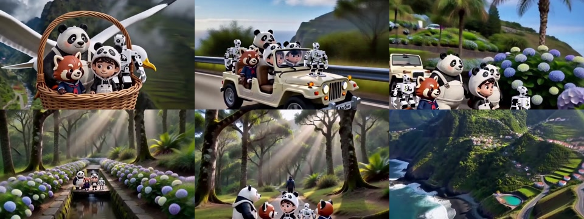

Up to six existing clips · one finished idea
Stop stitching clips.
Build the turn.
This page preserves an earlier six-clip editing experiment and its build record. The sample does not meet the current visual-quality bar, so the paid pilot is paused.
The files remain available for provenance and process inspection, not as current selling proof.
Archived sample · no fit check · no payment.
The assembly pass
One change from
first frame to last.
01Write the film's before-and-after sentence before opening the timeline.
02Give each usable shot one job: establish, reveal, prove, turn, or resolve.
03Build picture rhythm first, then make colour, sound, titles, and captions support it.
04Derive the shorter web cut from the same idea rather than making a second unrelated film.
The deliverable
A film, a shorter cut, and the trail back to the sources.
The experiment used footage that already existed but did not yet feel like one piece. It covered editorial assembly and finishing, not an open-ended generation campaign.
One 30–45 second master
A 16:9 H.264 master shaped around one agreed audience, message, and final action. Clips may be reordered, shortened, reframed, or left out.
One 25–30 second web cut
A shorter 16:9 cut derived from the same timeline, with its opening and ending adjusted so it still stands on its own.
Finish and handoff
Basic colour continuity, one music and sound pass, simple supplied titles or logo, final MP4 files, and a manifest recording source filenames and output settings.
Archived six-clip assembly
The source order changed. The journey became clear.
Six project-owned, eight-second AI-assisted scenes became a 41.958-second master. A 27.816-second web cut then came from the same timeline. The technical record is retained, but the early generated visuals are not used as current portfolio proof.

01 · Master · 41.958 sec
Six scenes, one climb and release
The sequence moves from a mistaken arrival through changing island landscapes, then lets the volcanic coast resolve the journey.
02 · Web cut · 27.816 sec
Four beats from the same timeline
The shorter cut keeps the arrival, motion, forest pause, and coast. It changes the pace without changing the idea.
Both exports are 1280×720 H.264 with stereo AAC audio. The centred crop, source order, selected ranges, transitions, output probes, and SHA-256 hashes are recorded beside the build.
This is our own AI-assisted footage, not customer work or an ad-performance result.
The working sequence
Make the decision cheap before making the edit expensive.
Fit check
Send a short brief, a contact sheet or private previews, the source durations, intended viewer, destination, rights, brand kit, and native-project requirement.
Written scope
We agree the before-and-after sentence, usable sources, music route, titles, deliverables, timing, deletion date, and revision boundary before payment.
Review
You review the first master with one consolidated list. The accepted corrections are applied to both exports where they share the same timeline.
The fixed boundary
Assembly of existing footage, not unlimited regeneration.
The archived scope did not include new filming, new AI generation, shot recreation, voice cloning, paid stock or music, translation, extra aspect ratios, channel publishing, or performance promises. Native Premiere Pro, After Effects, Final Cut, or DaVinci Resolve project delivery was never implied by the MP4 sample.
Direct-view proof
Three current pieces
Product, creator-led, and captioned work, with the actual project role beside every player.
Watch the video portfolio →Inspectable workflow
Story Clip delivery sample
A small project-owned packet showing the selected moment, caption file, source ledger, rights notes, and hashes.
Open the sample →Working terms
Agree the source and format before setting the clock.
Rights
You confirm that you control the requested use of every clip, voice, face, mark, logo, track, and other supplied element.
Correction pass
Send one consolidated list of in-scope picture, sound, title, or export corrections within seven calendar days of the first master.
Source handling
Transfer, confidentiality, retention, and deletion timing are accepted in writing. Customer footage is not reused as public proof without separate permission.
Archive status
This pilot is paused.
The earlier sample remains available as a transparent build record, but it is no longer featured or offered as current selling proof. A future clip-assembly offer needs a newly reviewed visual sample first.
- Up to six customer-controlled source clips, up to 45 seconds combined.
- One 30–45 second 16:9 master and one 25–30 second 16:9 web cut.
- Basic colour continuity, one music and sound pass, simple titles, MP4 exports, source manifest, and one bounded correction pass.